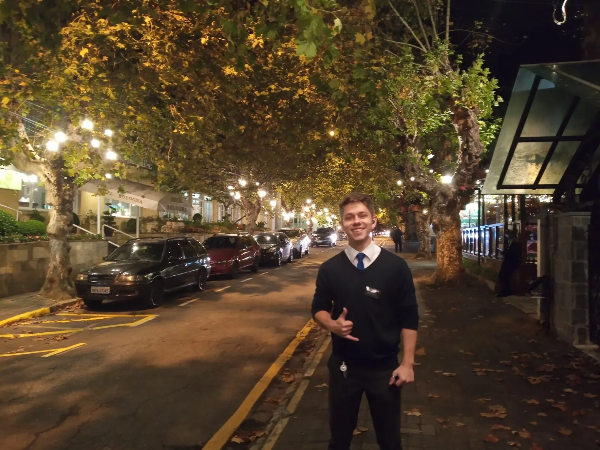
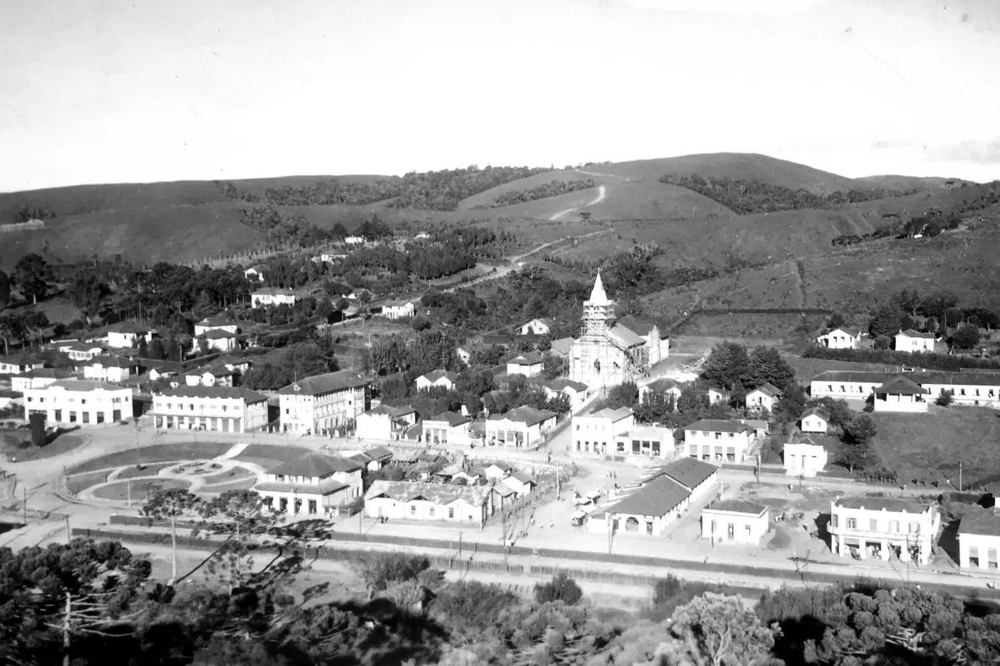
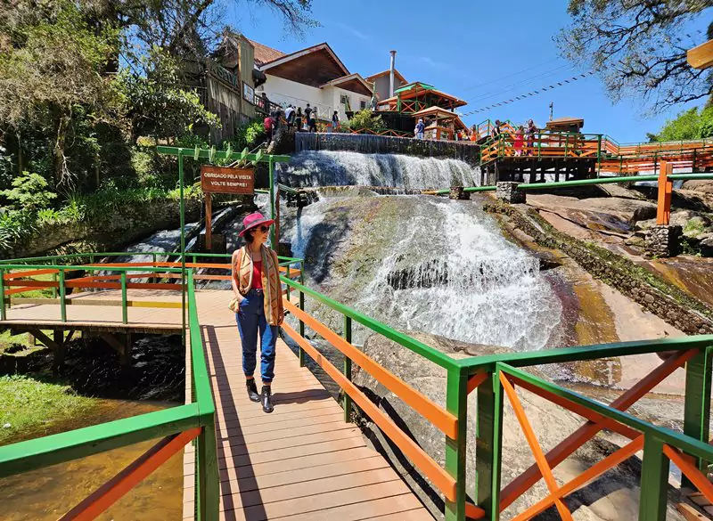
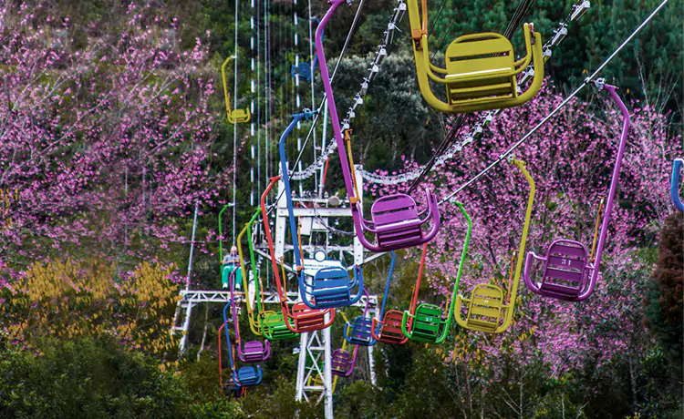
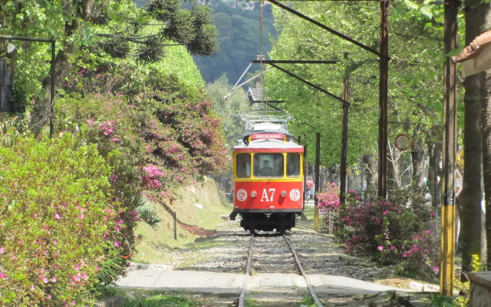
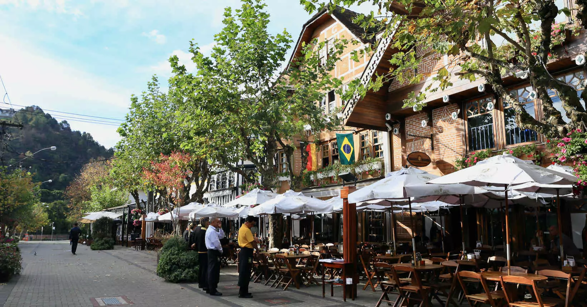
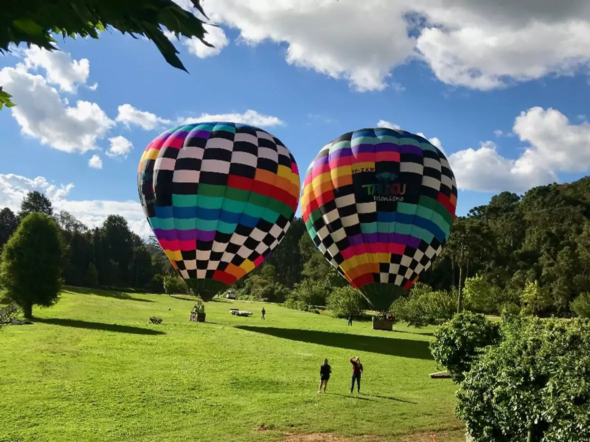
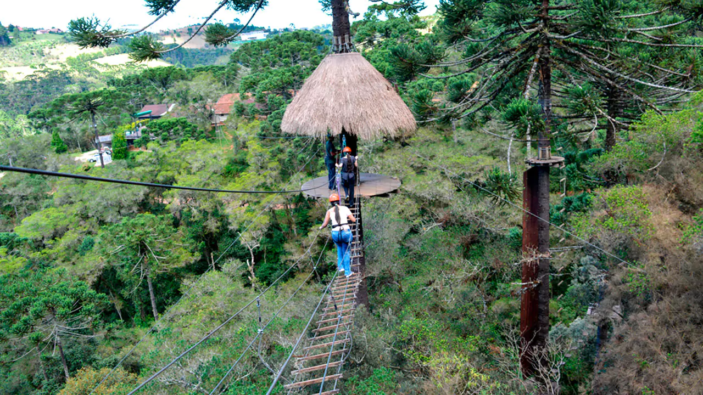

Welocme
About
Discover Campos do Jordão, São Paulo, Brazil – a picturesque mountain town nestled in the Serra da Mantiqueira range. Experience European-inspired architecture, boutique shops, and gourmet dining amidst scenic landscapes. Enjoy outdoor adventures like hiking and skiing, or indulge in spa retreats for relaxation. Campos do Jordão offers a unique blend of nature, culture, and leisure, making it an unforgettable destination for travelers seeking tranquility and charm.
Did you know?
- Brazilian Switzerland: Campos do Jordão is often referred to as the "Swiss Alps of Brazil" due to its European-inspired architecture and mountainous terrain.
- Highest City in Brazil: Situated at approximately 1,628 meters (5,341 feet) above sea level, Campos do Jordão holds the title of the highest city in Brazil, offering visitors refreshing mountain air and cooler temperatures year-round.
- Festival of Winter: The town hosts the renowned "Festival de Inverno" (Winter Festival) annually, featuring cultural events, music concerts, and art exhibitions, drawing artists and performers from across Brazil and beyond.
- Beer Capital: Campos do Jordão is known for its thriving craft beer scene, with several local breweries offering a diverse selection of artisanal brews inspired by traditional European recipes.
- Home of Brazil's Largest Christmas Tree: During the holiday season, Campos do Jordão dazzles visitors with Brazil's largest Christmas tree, adorned with thousands of lights, creating a magical atmosphere in the town center.
- Celebrities' Hideaway: The town is a popular retreat for celebrities and high-profile figures seeking privacy and relaxation amidst its tranquil mountain setting.
Attractions

Ducha de Prata - Water Fall

Cable car - Morro do Elefante

City train

Downtown

Big balloon ride

Tree climbing